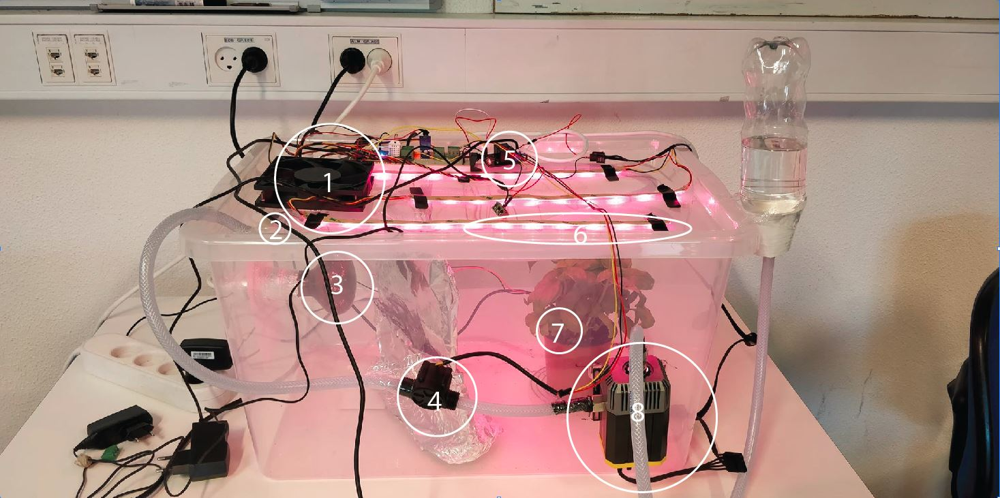

Prototype
The system consists of: 1) Fan, 2) DHT temperature and humiditysensor, 3) Heat lamp, 4) Water flow sensor, 5) Relay, 6) LED strips, 7) Ground moisture sensor, 8) Water pump. A Raspberry Pie acts as the server and two NodeMCUESP8266 microcontrollers acting as nodes. Furthermore, we are using the Evrythng platform as a cloud service as it is an easy way to distribute data from IoT components to web applications. The NodeM-CUs are developed with the Arduino IDE2, whereas the server is developed with Node.js3. The web applications was developed using Vue.js integrated with OAuth2.0.

Data
A PID controller calculates an output based on input from a given source and the previous outputs calculated. We used such controllers to monitor the plant environment, so if the temperature sensor measures a temperature below the defined threshold it will eventually turn on the heating lamp. This way of control aims to hit a targetvalue - a set point - and stay at this value. The same is true for the water pump and ground moisture sensor as well as the fan and humidity sensor. If the measured moisture level dips below the set pointthe water pump will activate for a time, followed by a new reading.